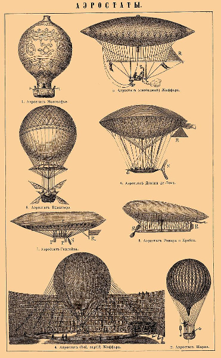

Quotes about Air and Airships
by
William Hope Hodgson
In William Hope Hodgson's The Night Land, the unnamed narrator is travelling down into a deeper leg of the Great Valley. He remarks on the air, and recounts some history concerning the use of airships.
And three days more I journeyed thus, and did never cease to creep downward weariful upon my hands and knees; and the Diskos I had to my hip, and so shall you know how I carried it. And by this, as you do know, I had been on the Great Slope six days of utter Dark; and did have no wotting but that I went unto some dire and dreadful place; for, surely, I had gone for ever downward a monstrous way.
And here, before I tell further, I must set down how that the cold was much gone from out of the air upon the slope; and the air was grown, as it did seem, very heavy unto my chest. And concerning this matter I should say something. For, if I do mind me, I have said not overmuch concerning the air of the Night Land and the Mighty Pyramid; for truly I have been so set to tell my story of all that I did truly see and adventure upon. Yet, though I have said but little, you will surely have perceived that the air of that far and chill time was not as the air of this; but was thin and keen within the Night Land, and lay not, as I do think, to a great height above the land, but only nigh to the earth.
And as you do know through my tellings, there was a wondrous difference between the air within the Mighty Pyramid, and that which lay without around the base; for upward beyond that, I did understand that there was no outward air that any should breathe; and so was all the Pyramid sealed in certain wise in all the upper Cities for ever; and whether it was sealed utterly from the outward air at the base, I do not surely remember, if, in truth that I did ever bother my head to such matters.
Yet, if I be set proper in memory and understanding, we did draw air from the Underground Fields; but whether they gat any change or newness of air from the Night Land, I have no knowledge; and do lament that I have no sure knowing. Yet, as you shall believe, I could surely write an hundred books upon that Wonder of the Future, and be still lacking in the half of all that there is to be told; and so do I try to have courage to this my task, and to have no over-trouble, because that I do tell but a little of a Great Tale.
And here in this place will I set down how that the Peoples of the Pyramid were greater to the chest, methinks, than we of this age; but yet do I have no oversurety in the matter; for well it may be that the Reason of this age doth blind within me somewhat the Knowledge that I have concerning that; for, in verity, is it not but a natural thing to believe those Peoples to be great of the chest, so that they should make a proper dealing with the thin air of that place and that time? And yet, as I do strive to make plain unto you, because that this thing should be, by the making of my Reason, I do the more distrust that Reason shall make foolish my Knowledge; for even a fool should suppose that which I have told; and the truth may be even otherwise.
Yet that the Peoples of the Upper Cities had great chests, I do well know; for this was a common knowledge; even as we of this age do acknowledge the Peoples of Africa to be of blackness, or those of Patagonia to be of great stature. And by this one thing should any know a man of the Upper Cities, from a man of the Lower Cities. And because that there grew this difference among the Peoples, there had been once, as any could learn from the Histories, a plan whereby the Peoples should be moved upward and downward through the great height of the Mighty Pyramid, from this city unto that. Yet had it met with great disfavour; and was put out of force; and this is easy to be seen as the natural way of the human heart.
And here it doth occur unto me that it was like enough to be a plan for health, beside of training of the mind, that each youth and maid was put to travel through all the cities of the Mighty Pyramid; the which did take three years and two hundred and twenty-five days, as I have told before this. For by this plan, were they made to breathe the air of every height, and this, mayhaps, unto the good of their developing. And they also to discover that air which was best to their need.
And concerning the air of the Night Land, you shall know that there was in all that Land no flying thing, because that the air was grown very thin; yet, as the Records did show, there had once been monstrous flying-brutes, that went over the Land in mighty bounds; but this was in a long gone age; and we could but suppose that the Records gave truth.
And here you shall know that, when the Monstruwacans did learn that I would journey through the Night Land, in search of Naani, there had been some foolish and well-intended talk among them that I take a small flying-ship, that was in the Great Museum beside the models of the Great Ships. For, truly, this machine was yet sound to go; for it was made of the grey metal of the Mighty Pyramid, that did seem to have no power to cease. Yet, in verity, I had no skill to manage this, neither had it flown, through an hundred thousand years; so that none did know the mastership of that art, which did be learned but by a constant practice, and oft made uneasy by fallings that did wreck the machine, as I did know from the Book of Flying. And, moreover, as I have told, the air of the Night Land was grown over-weak to uphold such a thing; which, I doubt not, had made the Peoples of the Pyramid to cease from flyings, quite so much as that they did fear the Forces of Evil in the night.
And if that there had been air and skill sufficient unto this purpose of flying, yet had I been wicked with foolishness that I should work to be hung upward in the night, for all the Evil of the Night Land to behold. And though I had gone up some great way, yet the machine had surely made a great noise in the quietness of the eternal night, as you shall suppose.
Now indeed am I gone weary that I should need to tell so much concerning the air of that Time and Place; for surely I do seem to make this my story as that I did make a lecturing upon matters of chemistry; and so do I cast about, that I may not bother to tell more upon this matter. Yet, in truth, a little more of my thinkings and observings had I better set down here, and so be done with it. But you shall have patience with me, and know that had this, my story, been no more than an idle tale, I had been free to make no labour with such matters.
Now there doth a wonder come to me why that the Road Makers, who were of that far-off Age which was before the Age of the Mighty Pyramid, did not fly downward from the upper world into the deep of the monstrous valley; but did instead build a road.
Yet it may be that the air of the upper world had grown thin a great age, so that they had truly forgot that once man did have power to fly. But even if that they did have proper machines to this purpose, surely it were a wondrous and fearful thing to fly downward an hundred great miles; for they surely to have a dread that they never to rise again through so huge a deep.
And, moreover, the downward world that was the bottom of the Great Valley, was full of monsters, as was told in the little metal book. And the monsters were very strange and unknown; and foreign to the whole world, that had never come unto the deep of the Valley. And the Valley had come, as you shall mind, when the earth did split; and this thing was, in truth, like to be thought that same Ending of the World, which all Nations have been taught to believe shall come. For in verity, when the world did split and burst, and the oceans rushed downward into the earth, and there was fire, and storms, and a mighty chaos, surely it was proper to think that the End had come. Yet was it, in truth, but the beginning of hope of a new Eternity of Life; so that out of the End came the Beginning, and Life out of Death, and Good out of that which did seem a dire matter. And so is it always.
Yet doth this go past my first wonder, which did concern the wherefore that they made not to descend in Things of Flight. Yet, maybe, shall my reasons stand to show why this was not.
And again, mayhap it did chance that some were wild adventurers, and did leap over the edge of the upper world, having to ease their flight certain contrivings, like to parachutes. And these you shall picture, as that you watched them to leap; and so shall you see them go downward into the gloom; and you shall see them for maybe ten miles, and maybe for twenty miles; and afterward shall they be lost utterly in that Great Deep, and seen no more of any man for ever.
But when the Nations became Road-Makers, and came downward slowly to the monstrous Deep of the Mighty Valley that did split the World, then were they come there by millions, and with power sufficient to fight against the Beasts; and afterward to grow back again to an ancient Civilizing; and so to the building of the great airships that were yet shown in the Great Museum of the Pyramid. And here shall I cease from these my thinkings on this matter; for indeed, who shall say what did be truly a Reason for those peoples and what was their Need? And so do I come to no surety by my wonderings.
Yet, as you do know, all things do seem verily to go in a circle; for, behold, in time, they of the Mighty Pyramid, were likewise held off from the glory of the airships; and so were gone backward a great way, according as we do look upon this matter. And so hath this been the way always, as you shall know who have studied and thought, and seen the true ways and goings of Life.
And now will I go forward in my telling; and here will set down a sure thing that I did perceive, both by mine ears and by my fingers; for, as I did make clear to you but a while gone, there had come a change into the air as I did go downward of the Mighty Slope; and truly I was come to a great and new Deepness, even beyond that of the wondrous depth where did stand the Last Redoubt. So that I was afar down and in a monstrous night. And the air here was of a great thickness and abundancy, even as it might be the air of this our Age; or maybe more or maybe less; for who may compare two matters with a sure guessing, that do have an eternity to keep them asunder. And because that the air was grown very strong and apparent, it shall be, mayhaps, that it was by reason of this thing that the water, when I did make it, did fizz upward in a moment very loud and plentiful, and did boil overward to the earth from out of the cup, and wet upon my hand. And surely this thought did come very keen to my Reason, as I did fumble, each time of mine eating, there in the everlasting night and lonesomeness of the Great Slope.
And so shall you have knowledge now of this and that thing which did come upon my thought, and of the little and the big wonders, and all shall help something to give unto you the ache of newness and bewilderment that was constant companion unto me.
Now by this time, as I have said, I was gone downward ever for six great days; and I did seem as that I should presently come to the middle of the world; for of going downward there was no end.
And then, when it did be that I was near ready to believe this, I perceived far off in the deep of the night a little shining that was yet weak and unsure. And I do not know whether I can truly give unto you the great astonishment and pain of hope that did come upon me; so that I grew sick in all my being but to behold once again the blessedness of light, and to have help unto my belief that I went not downward to an utter desolation.
The Home-Call, a very loud signalling system that is used in later eras to warn those venturing outside the Pyramid that they have been discovered by some menacing fore, was originally meant for airship-signalling. When the Youths were abroad in the Land, some wanted to call them with it before it was certain they were discovered.
Yet might it be thought that we should have signalled to them, calling by the Home-Call, which was that great Voice which went forth from the Machine above the sealed base of the Mighty Pyramid. But this we might not do; for then we gave signal to the Monsters of that Land, that some were even now abroad from the Pyramid; yet we could no more than hope that the Evil Forces had no wotting of them; for, in verity, none might ever know the knowledge or the Ignorance which those Powers did possess.
Yet, it must be kept to the mind that we knew even then there was an Influence abroad in the Land, strange and quiet; so that the Instruments did not more than make record of it. And as I have surely set down ere now, we had belief that it did come from that House of Silence, afar in the Night Land, upon that low hill to the North of the Great Road. And many among the Monstruwacans feared that it was directed upon the Youths; but of this there could be no surety; and we could but wait and watch.
Now, about this time those poor Youths did draw nigh to that part of the Road Where The Silent Ones Walk, where it turned more swiftly to the North; and they to be now at no mighty distance from that grim and horrid House.
And presently we knew that the Influence had a greater Power in the Land; and I had an assuredness that it came from the House; yet no certain proof was this. But I set out my feelings to the Master Monstruwacan; and he had trust in them and in my power; moreover, he also had belief within himself that some secret Power came out from the House of Silence.
And some talk there was at times that we send the Home-Call into the night, to give warning to the Youths of our knowledge and our fear; and to entreat them to make a safe endeavour to return swiftly. Yet was this an error; and refused by the Master Monstruwacan; for it was not meet that we put the souls of those Youths in peril, until such time as we had certainty that they should be lost if we did not bestir ourselves. For, indeed, this Home-Call was as a mighty Voice, calling over the world, and did have so exceeding a noise, that it had immediately told all that Land how that some were yet abroad from the Great Redoubt. And here will I set down how that the Home-Call had no use in those ages; but had been a Call in the olden time when yet the great flying-ships went abroad over the world.
While the narrator is crossing the Land of Seas and Volcanoes in the northern leg of the Great Valley, after fighting off the Humped Men, he comes on the wreckage of a crashed airship.
Now, as I did sit there at the bottom of the Rock, I looked upward at the strange crown thereof; and until that time, I had been taken up with the fight and with gazings this way and that to see whether there came others of the Humped Men to work me an harm.
But now that I was given some ease of the mind and of the body, I saw plainly that I knew the thing that lay upward upon the Rock; for the shape had been something strange and half-known to me even before that moment, as that I had a vague knowledge concerning it; but yet with no surety. And now, truly, I did know in a little instant that the thing was one of the olden flying-ships, the which, as you shall mind, there were certain in the Great Museum of the Mighty Pyramid.
And surely, I was ready to wonder why that I had not seen the thing plain before that moment; yet was this like to be because that there was a shadow upon the other side of the great Rock; but upon this side there was a little fire-hill a way off to the cliff edge, and this did throw a warm light that made a glimmer upon the dull metal of the ship's bottom, which was uncovered to my sight, and was surely of that same deathless grey metal that made the Great Redoubt.
And yet, as you shall believe, even as I said this thing to my mind, that the strange matter upon the top of the Rock was truly one of the olden air-ships, I did feel that I should be proper to doubt; for it was a very wondrous thing to perceive a thing common to man, in that utter strange Country, and after that I was gone so far off from the Mighty Pyramid. Yet, in verity, I did know in my heart that it was indeed that which I did perceive it to be; and I did stand and walk to and fore and look upward constant; for I was very keen that I look well upon it.
And truly, as I did look from this place and from that place, it was scarce a thing for wonder that I had not wotted it to be an air vessel; for there were great trees and abundance of earth and living matters upon the topmost side of the ship; so that none could easy perceive it to be aught save a great and desolate rock that did lie upon the other rock. Yet, truly, it was as I have told; and presently I did make to climb upward of the great Rock, that I should come to the air vessel to enter it. But yet was this not proper; for I had surely no duty save to go forward forever, until that I found the Maid; but yet did I spend a little while to this searching of the ship; and I do but set down that which I did, and with a serious spirit. And truly, as it doth here occur to me, I do be ever seeming a serious young man, as you maybe shall have grown to think; but yet was I to a dread and serious business, and the strain did be too great upon me and the trouble too much prest upon my heart to give me much of laughter, as you do surely perceive, and so you to give me your ear and your understanding. For, indeed, before that I did lose Mirdath my Beautiful One, I was not over-grave; but so young and joyous as any. Now it took me a great time to go upward of the Rock; for it was so monstrous steep and high. Yet, presently was I come nigh under the bottom of the ship; and here I did perceive that she had been sore battered in that far-off age when she did come upon the Rock; for, surely, as I did perceive, the peak of the Rock was through the bottom of the ship, so that the metal was burst this way and that, and very plain to be seen in some parts; but in other places the earth and growing matters did make a hiding.
And after that I had climbed this way and that way, I perceived that I must come to the topmost part by the plants that did hang over, and grow downward. And after that I had pulled upon them, to know that they were strong to hold me, I went upon them, and was soon to the top of the ship. Yet, truly, I might so well have been upon the earth; for the ship was covered above by the earth and dust of a monstrous age of years; so that I was like to need much time to dig downward unto the ship; and because of this, I considered a little while, and afterward made no more to search her; but did go downward again, that I should come once more to my journey. Yet, as you shall think, it was with a queer thrilling of the heart, and with strange thoughts upon the end of those that did come, maybe, to a bitter and lonesome dying in that ship of the air, in that far-off time when she did fly.
And surely, it did seem to me as I went downward of the great Rock, how that the flying-ship had been there for an hundred thousand years; and that mayhaps the sea did live all about the Rock in that Age; and truly this was no improper thing to think, for it was like that the sea had been monstrous high and great in those days; so that the Rock was but a little island in the midst of the sea; and now was the sea gone small from a great sea to lesser seas, and this through an eternity of years. And always, as it doth seem to me, had the ship lain upon the Rock, and lookt quiet and silent over the change and wonder and the lonesomeness of all that Country of Fire and water, for ever.
But how the air-ship did come upon the rock, how shall I know; save, maybe, it doth seem as that she might have flown low over the sea in that olden age, and come hard upon the Rock, because, maybe, there was one to the helm that did steer unwittingly. And again, it shall well be otherwise, and I do but set down mine odd thoughts; and such as they be, they have no especial use, save that they do show to you the different workings of my mind at that time, as I did go downward. And so to set you the more in possession of all that I did have knowledge of.
And presently, I was come again to the earth, and did go forward with a great speed, so that I should waste no more of that day. Yet, oft did I think upon that ship hid there upon the mighty Rock, under the wondrous quiet ashes of eternity.
He tells Naani about the airship on the way back.
Now, about the fourteenth hour of that journeying, I saw before us, in the far distance, the rock upon which did be the olden flying ship, that you shall remember. And presently, as we came more nigh, I lookt oft to Mine Own; and I saw that she did be staring that way, and to be in wonder; but yet to say naught to me.
And soon, as we came very close, I did want that I tell her about the ship, and of mine adventuring there, and of the wonder of that olden ship, set there through Eternity.
But in the first, I hesitated, as you shall think, because of her way; but truly, my heart knew that her heart did be proper unto me; and, moreover, I should be small in my nature, if that I let any pettiness put a silence upon me; though, in verity, if that the Maid had not been inwardly loving to me, I had been that I had told her no word; and this to be very natural, whether it be of smallness or not.
And when that we were come beside the great uprising rock, I made halt, and the Maid to halt with me; and I showed her how that the thing upon the rock did be an olden flying ship from the Mighty Pyramid. And in the first, she askt no questions; but did be quiet and but to show with little noddings that she did be greatly interest.
And I to show to her how that this olden ship did be there mayhap an hundred thousand years; and to have been there, as it did seem to us (that were of that age) since the beginnings of the world; though, in verity, our two spirits did know that the beginnings of That Age, did be truly the ending of This, as you also to know.
Quotes from William Hope Hodgson's The Night Land, which is in the public domain.
The image was published before 1908 and is in the public domain in the United States.